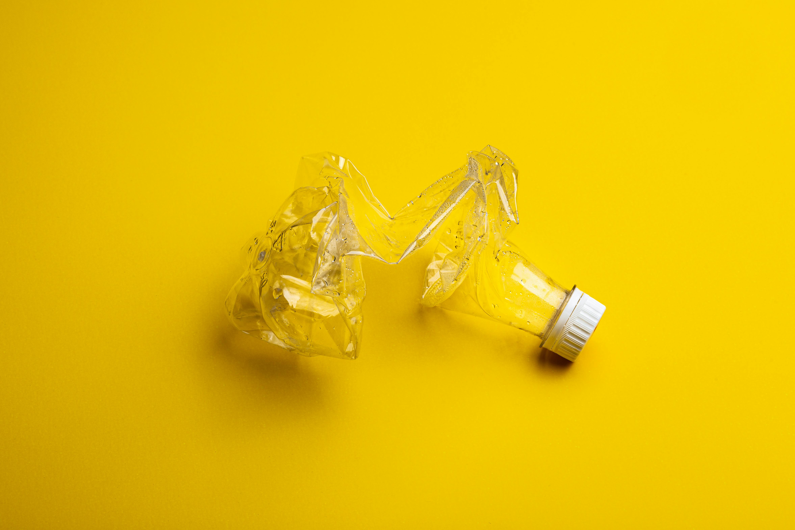

Imágenes ilustrativas del Proyecto

Ejemplo de material reciclable como parte del objetivo de concientización del Proyecto PEC.

Voluntarios colaborando en actividades comunitarias, base fundamental del proyecto educativo.